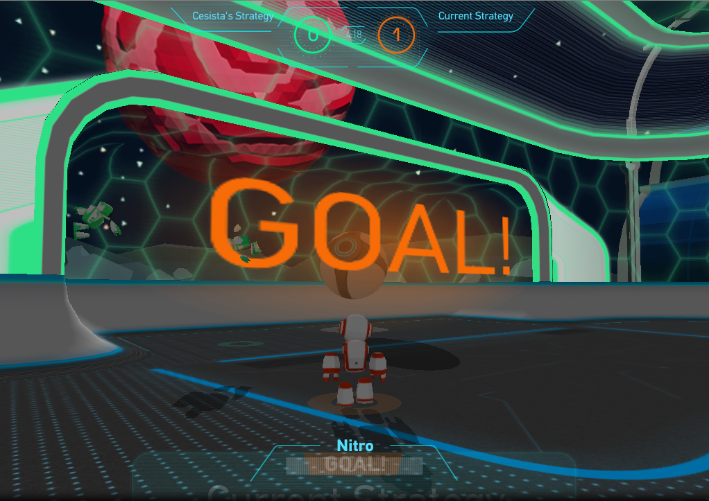

My entry for the World Finals of the Russian AI Cup 2018 - Codeball. Codeball is a Rocket League-esque 3D soccer game where we have to program an AI to control a pair of bots to beat enemy AI-controlled pair of bots.
Strategy
Physics Simulation
My strategy employs a 3D physics engine to (1) track and predict the ball’s and the bots’ positions and directions, and (2) calculate the best location, angle, and speed to intercept the ball, block an enemy bot, or score a goal.
Bot Behavior
The AI uses a rudimentary finite state machine to shuffle the bots between these behaviors:
- Attacker: The bot focuses on scoring goals. It attempt to score a goal whenever it has the opportunity. It will try to steal the ball and if it can score a goal, it will try to do so.
- Goalkeeper: The bot stays near the goal and tries to block the ball from entering the goal.
- Aggressive Defender: The bot actively tries to block or steal the ball from enemy bots. But if the ball is near the goal, it will switch to the Goalkeeper state.
- Blocker: The bot focuses on blocking enemy bots from scoring goals.
- Follower: The bot follows the ball or an enemy bot–usually as a follow up to an aggressive attack, a defensive block, or just to distract enemy bots.